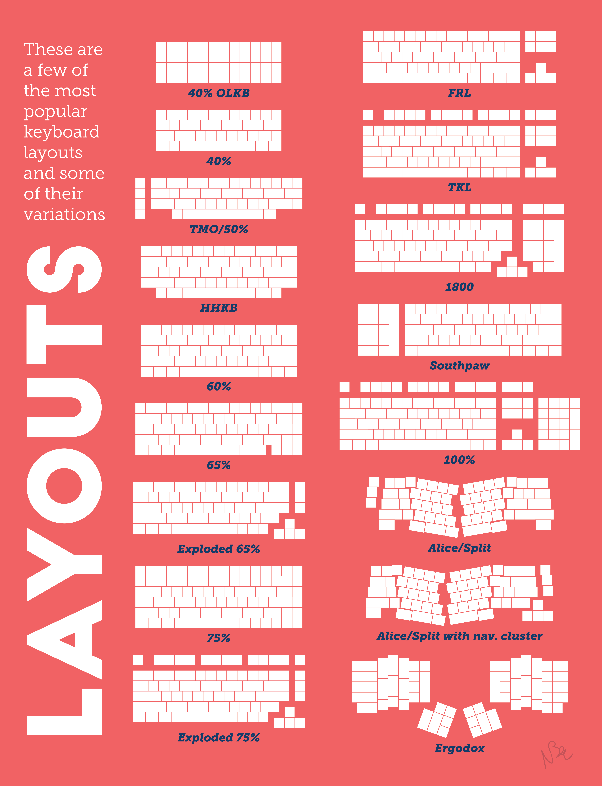
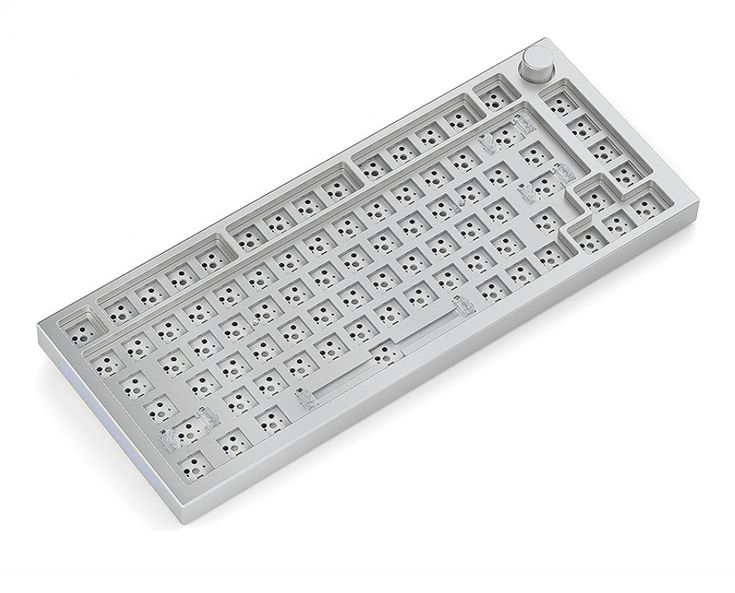
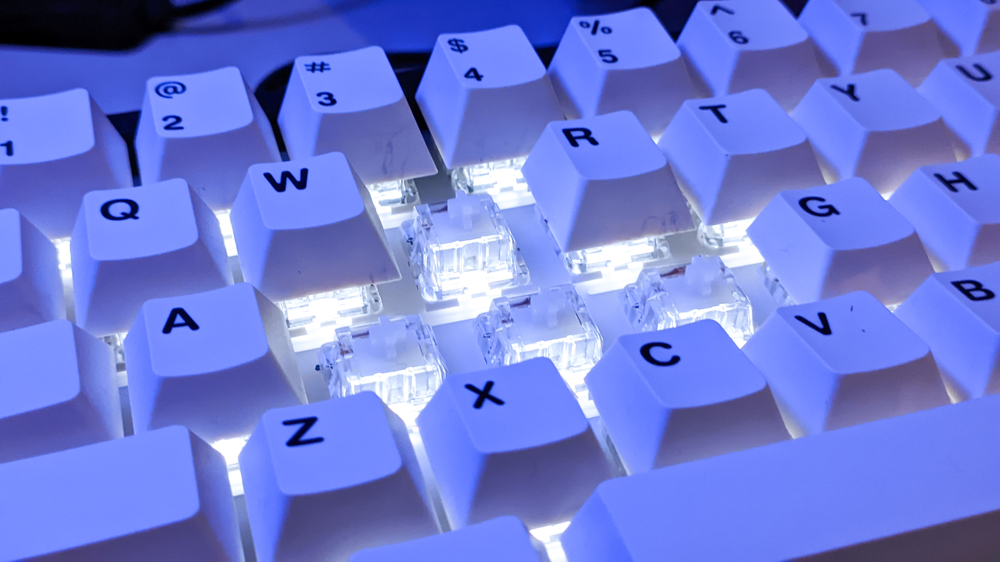
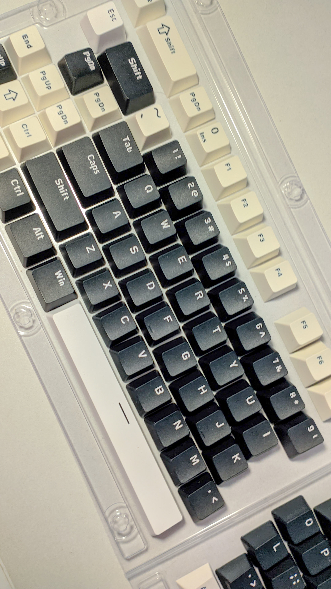
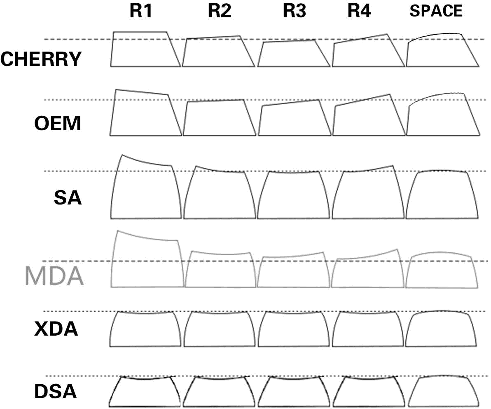

Boys will be boys mungkin kalimat itu lumayan sering dipake di berbagai sosmed, istilah ini umumnya mengacu kepada kebanyakan seorang lelaki yang terkadang selalu di nilai tidak bisa menjadi dewasa, isitilah nya disini disebut dengan 'boys'. Hal ini sering terjadi untukmewujudkan keinginan atau hobi masa kecil (yap, masa kecil kurang bahagia). Contohnya nih, waktu kecil ya memang dikasih duit jajan yang lumayan tapi yah namanya bocah bukannya ditabung buat disimpen malah buat jajan sembarang, dan sekarang walaupun masih ngandelin duit dari orang tua tapi udah bisa lah dikit-dikit manajemen duit dan beli sesuatu yang menjadi hobi. Namun, Mungkin memang tumbuh dewasa bukan berarti ninggalin semua hal kekanakan, tapi lebih ke gimana kita bisa bertanggung jawab atas kesenangan kecil kita.

Dan yap salah satu hobi itu adalah keyboard, atau sekarang lebih sering disingkat jadi 'keebs'. Sebelumnya mungkin bakal ada pertanyaan 'Lah laptop kah udah ada keyboard nya ancrit kenapa kudu beli lagi?', setelah dipikir-pikir iya juga sih-- eh bukan, gini-gini kan keseharian ku sebagai mahasiswa informatika gabisa jauh dari laptop, nah waktu iseng buka fb lagi trend tuh 'mechanical keyboard' dan langsung penasaran dong itu apa sih (iya, aku fomo wak). Langsung deh ketika barangnya udah sampe dan coba ngetik --Damn feeling nya beda banget, mungkin kalo kalian pernah ngerasain mesin ketik nah sensasi ngetik-nya hampir sama. Jadi klo di keyboard biasa (membran), apalagi di keyboard laptop kan biasa banget yah rasanya. Waktu nyoba mechanical keyboard ini ngasih rasa 'bouncing' tiap typing dan ini yang ngasih kesan berbeda.

Oke mungkin dari ada yang awam soal mechanical keyboard ini, dan mungkin bertanya-tanya "emang mechanical keyboard ini cocok buat siapa sih?" Jadi klo dari beberapa forum yang aku join ya kaya di facebook gitu, rata-rata dari beberapa pengguna keyboard jenis ini adalah orang yang kesehariannya kerja atau nugas didepan komputer misal nih ada kaya mahasiswa semester akhir yang mendedikasikan hidupnya didepan komputer, para konten kreator, programming, dan beberapa pekerjaan terkait. selanjutnya bakal ku bahas dikit soal mechanical keyboard, jadi di mechanical keyboard itu terdiri dari beberapa layout dan jenis, jadi layout disini berarti ukuran dari keyboard nya itu sendiri, lebih jauh lagi di dalem mechanical keyboard ini ada beberapa komponen yang penyusun, seperti pcb, switch, keycaps, dan case. buat lebih jelas nya bakal coba ku jabarin dibawah.
-
Layout

Panduan pemilihan layout keyboard (gambar dari redit) Keyboard jenis ini terdiri dari beberapa layout, namun disini yang coba dibahas adalah layout yang sering digunakan yaitu 60% keys, 65 keys, 75 keys, dan 80 keys atau tkl (TenKeyLess).
Oke yang pertama yaitu layout 60% keys, jenis layout ini sering digunakan adalah compact sehingga cocok untuk orang yang mempunyai workspace yang sempit. Namun, ada kekurangan pada layout ini yaitu tidak memiliki tombol arah (arrow keys) pada keyboard sehingga untuk mengakses arrow keys perlu tombol kombinasi, umumnya menggunakan 'fn' + wasd, selain itu pada layout ini juga tidak ada deret 'f' keys yaitu f1-f12 pada keyboard umumnya.
Selanjutnya adalah jenis yang sedikit lebih lebar yaitu 65%, menurutku ini layout yang paling ideal dimana secara dimensi mirip seperti layout sebelumnya. Tapi jika kalian masih memerlukan deret 'f' ini akan menjadi kompromi, karena tidak ada deret tombol tersebut pada jenis layout ini.
Selanjutnya adalah jenis keyboard 75% dan 80% atau TKL (TenKeyLess), kedua keyboard ini memiliki jenis yang hampir sama yaitu memiliki deret tombol 'f' dan tombol 'arrow keys'. Namun, perbedaannya adalah pada TKL mempunyai sedikit ruang diatas arrow keys sedangkan 75% memiliki keyboard yang rapat tanpa ruang sebanyak jenis TKL, kedua jenis keyboard ini tidak memiliki numpad di sebelah kanan. Buat kalian yang kerjaan nya ngolah angka mungkin ini bisa dipertimbangkan. -
Pcb dan Case

PCB dan Case keyboard (gambar dari pinterest) Ini sebenernya ga panjang-panjang amat penjelasannya makannya coba ku gabung antara kedua item ini. Oke yang pertama ada pcb, pcb di konteks mechanical keyboard adalah komponen yang berfungsi sebagai penghubung antara switch dengan baterai (jika keyboard tersebut wireless). Pada pcb ini ada 2 jenis yaitu hotswap dan non-hotswap (soldered). yang pertama ada jenis pcb hotswap, jenis pcb ini memungkinkan pengguna untuk melakukan custom secara lebih leluasa seperti melepas pasang switch tanpa menggunakan solder. Selain itu juga ada jenis pcb 3 pin dan 5 pin, ini berkaitan dengan switch yang digunakan kedepannya. Selanjutnya ada case, yaitu rumah untuk semua komponen keyboard seperti pcb, switch, dan baterai (jika wireless). Jenis case untuk keyboard ada beberapa bahan seperti resin, acrilic, alumunium, dan kayu. Jenis material dari case ini akan berpengaruh pada bobot keyboard.
-
Switch

Salah satu jenis switch linear Nah ini, ini adalah komponen yang paling penting dari keyboard, karena suara yang dihasilkan keyboard dipengaruhi oleh jenis switch yang digunakan.
Secara general ada beberapa jenis switch yang dimana menentukan arah suara mechanical keyboard.
Yang pertama yaitu ada linear switch, switch jenis ini merupakan jenis switch paling mulus ketika ditekan, tanpa ada hambatan atau bump ketika satu tombol ditekan. Suara yang dihasilkan umumnya memiliki karakteristik 'creamy', kekurangan switch jenis ini adalah gampang typo karena sangat ringan ketika ditekan. Switch jenis ini umumya jika di paket pembelian keyboard memiliki warna merah.
Selanjutnya ada tactile switch, switch jenis ini memiliki jeda atau sedikit bump jika ditekan sehingga perlu sedikit effort, namun sisi positif nya tidak jadi mudah typo untuk suara lebih kearah 'thock' dan lebih berisi daripada linear switch sebelumnya. Umumnya dipaket pembelian switch jenis ini memiliki warna cokelat.
Nah ini, selanjutnya jenis switch paling asik karena karakteristik suaranya yang paling rame daripada sebelumnya yaitu blue switch. Switch jenis ini memiliki hambatan juga seperti tactile switch, untuk karakteristik suaranya sesuai nama switch ini yaitu terkesan seperti 'click'. Untuk dipaket pembelian switch jenis ini memiliki warna biru.
Oiya untuk setiap karakteristik switch ini tidak bisa ditentukan mana yang paling oke perlu dicoba masing-masing jenis switch untuk dibandingkan, untuk penjualannya sendiri switch ada yang dijual satuan (sekitar Rp.3k - Rp.8k) atau ada juga yang langsung bundle (misal 20 pcs) -
Keycaps

Keycaps 2 tone Ini mungkin kalo ibarat fashion, case keyboard tadi adalah celana, sedangkan keycaps adalah baju dan outer, keycaps ini adalah setiap tombol yang berbentuk huruf di keyboard. Keycaps ini ada beberapa jenis bahan, seperti abs dan pbt. Untuk jenis abs ini umumnya bawaan pada beberapa keyboard 'budget', sedangkan pbt ini lebih mahal dan lebih berisi (namun akan lebih murah jika beli secara terpisah). Kedua jenis bahan ini juga memengaruhi karakter suaran keyboard kalian.

Profile setiap keycaps jika dilihat dari samping (gambar dari redit) Selain bahan keycaps, ada juga jenis profile pada keycaps yaitu seperti bentuk setiap tombol yang memberikan pengalaman berbeda dalam mengetik, ada beberapa jenis profile seperti oem, cherry, SA, dan XDA. Umumnya terlihat perbedaannya jika dilihat dari samping keyboard.
Jadi ya gitu, perjalanan dari cuma iseng liat-liat di Facebook, sampe sekarang jadi tau jenis layout, switch, bahkan bahan keycaps tuh beneran bikin aku makin paham kalau ternyata hobi “cuma keyboard” itu dalem juga. Tapi ya begitulah, yang awalnya dikira mainan mahal-mahalan, ternyata bisa jadi cara buat nikmatin proses ngetik yang lebih satisfying, apalagi buat kita yang tiap hari nempel di laptop. Jadi kalau kamu ngerasa penasaran, atau bahkan FOMO kayak aku dulu, mungkin udah saatnya nyobain satu keebs pertama kamu. Karena ya balik lagi, tumbuh dewasa itu bukan soal ninggalin hal-hal kecil yang bikin seneng, tapi gimana kita bisa tetap waras dan produktif sambil nikmatin hal-hal receh yang bikin bahagia. Jadi udah mulai keracunan keyboard belum?